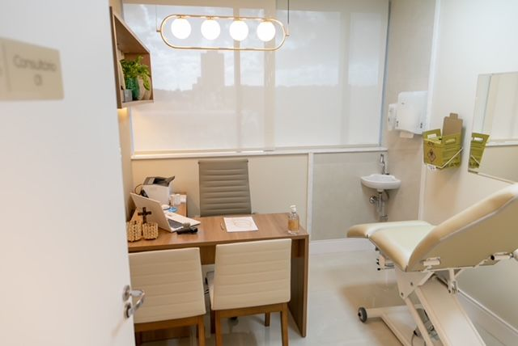
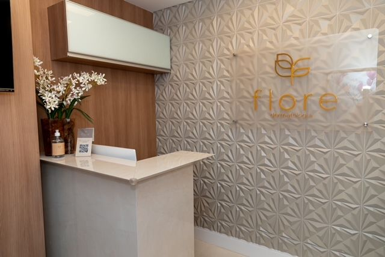

Início · Onde atendo
Onde atendo: consultório, hospital ou online.
Três formas de ser atendido. Os convênios variam conforme o local, e a equipe confirma antes de marcar.
Dra. Andréia Nogueira RamosDermatologista · CRM-BA 20305 · RQE 12865 · Mestre em Medicina e Saúde pela UFBA
Consultório
Flore Dermatologia
Av. Tancredo Neves, 2539, Torre Londres, salas 509 e 510
Caminho das Árvores · Salvador · BA · 41820-021
Particular, Bradesco Saúde e Sul América Saúde. WhatsApp (71) 98624-0161 · Telefone (71) 3341-7474.


“O consultório é lindo, cheio de elegância em sua decoração.”Elisama, avaliação no Doctoralia, 2023
Hospital
Hospital São Rafael
Av. São Rafael, 2152
São Marcos · Salvador · BA · 41253-190
Atendimento de dermatologia geral pela Rede D'Or. Convênios informados no perfil da médica para este endereço: Bradesco Saúde, Camed, Cassi, Sul América Saúde, FACHESF, PROASA, Medservice e APUB Saúde, além de particulares.
Online
Teleconsulta
- AgendePelo WhatsApp ou pelo Doctoralia.
- Receba o linkPelo menos 30 minutos antes, o link da videochamada chega por SMS e e-mail.
- Consulta por vídeoPara adultos e crianças de qualquer idade.
- Prescrição onlineReceitas e pedidos de exame são enviados digitalmente.
Rotas
Como chegar
Agende
Uma consulta com escuta e explicação detalhada.
Na Flore Dermatologia, no Hospital São Rafael ou por teleconsulta.